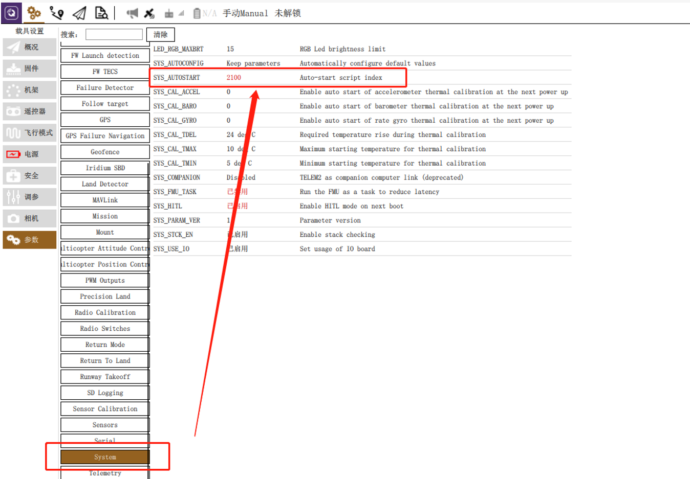
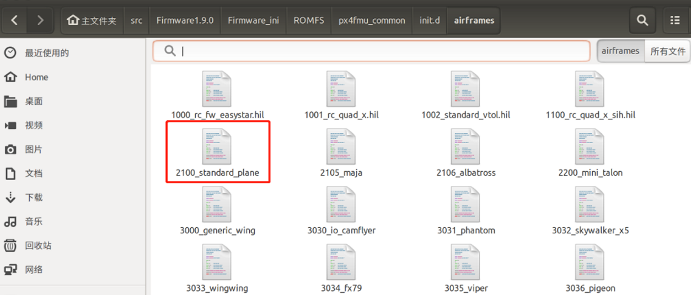
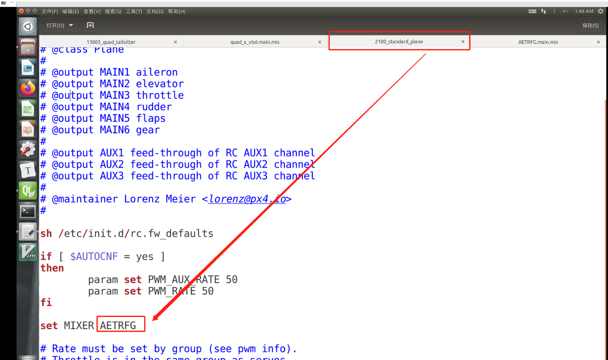
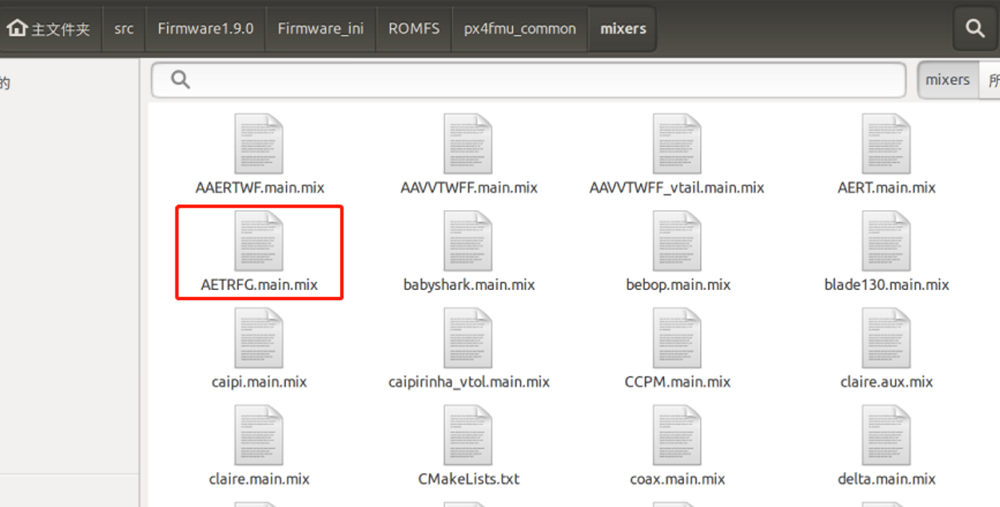
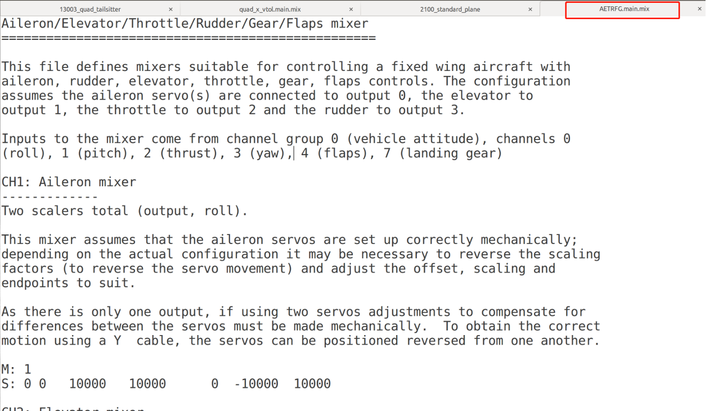
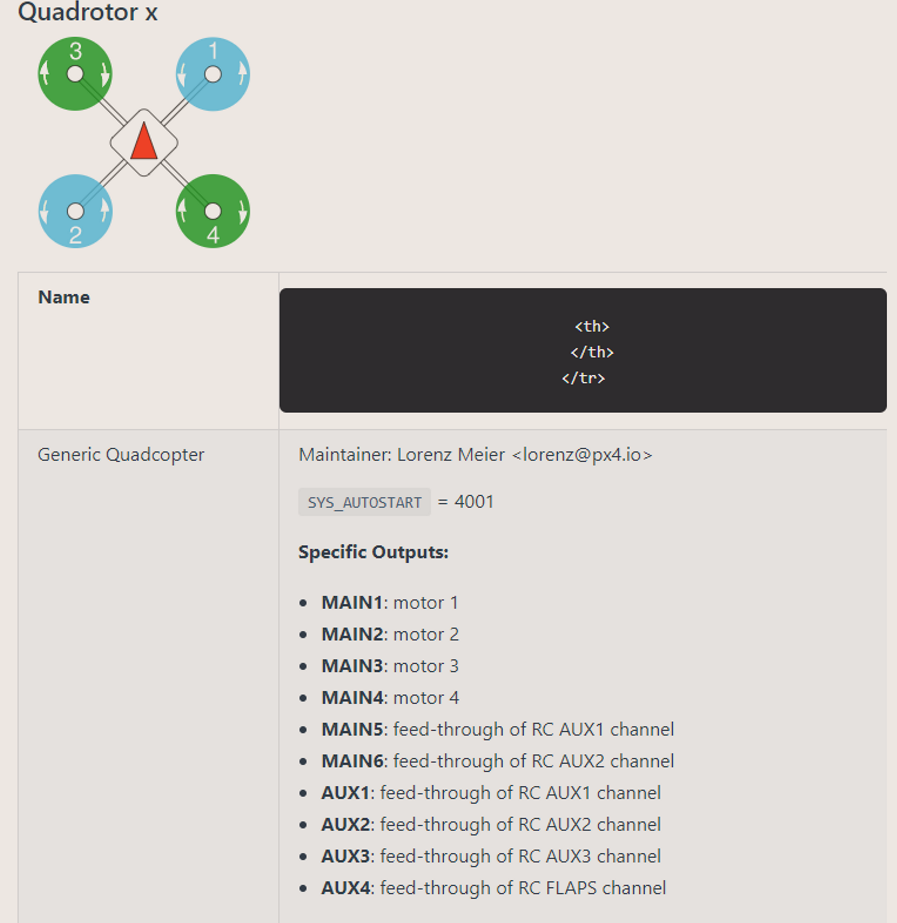
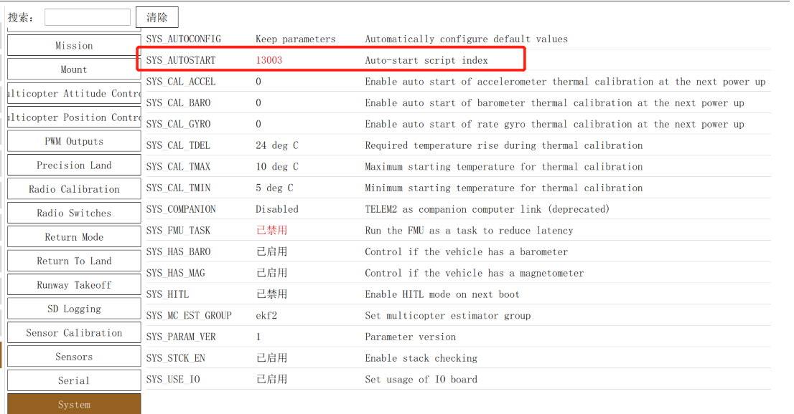
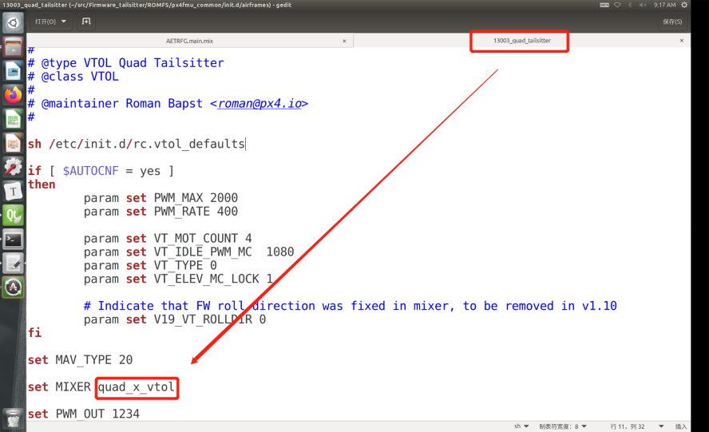
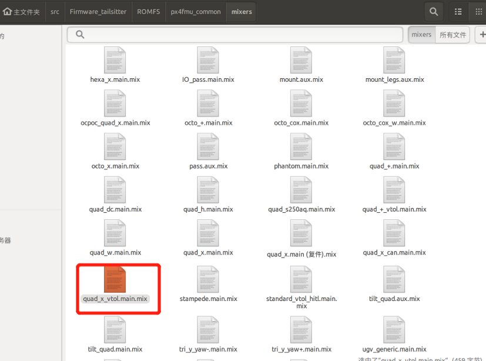
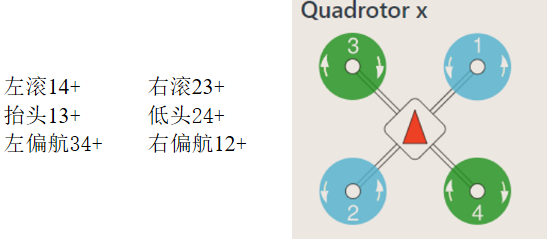

混控器代码位置
在地面站中的System找到当前机架的编号

在ROMFS/px4fmu_common/init.d/airframe中找到对应的机架文件

在该文件中找到使用的混控器模型

在ROMFS/px4fmu_common/mixers中找到上述混控器

打开该混控器

混控器语法 mixer通过文本文件定义；以单个大写字母加一个冒号开始的行是有效的。其它的行则会被忽略，这意味着注释可以自由地在定义中穿插使用。
每个文件可以定义多个混控器；混控器与作动器的分配关系由读取混控器定义的设备决定，作动器输出数目则由混控器决定。
例如：每个简单混控器或者空混控器按照它们在混控器文件中出现的顺序对应到输出1到输出x。一个混控器定义通常具有如下形式：
1 <tag>: <mixer arguments>
tag标签决定混控器的类型；M对应简单求和混控器，R对应多旋翼混控器，等等。
空混控器 空混控器不接受控制输入并产生单个作动器输出，其输出值恒为零。空混控器的典型用法是在一组定义作动器特定输出模式的混控器组中占位。空混控器定义形式如下：
简单混控器 简单混控器将0个或多个控制输入混合为单个作动器输出。所有输入被缩放后，经过混合函数得到混合后的输入，最后再经过输出缩放产生输出信号。简单混控器定义如下：
1 2 M: <control count> O: <-ve scale> <+ve scale> <offset> <lower limit> <upper limit>
如果 <control count> 为0，那么混合结果实际上为0，混控器将输出一个定值，这个值是在<lower limit>和<upper limit>限制下的<offset>。第二行用前文讨论过的缩放参数定义了输出缩放器。计算以浮点操作被执行，存储在定义文件中的值经过了因子10000的缩放，即偏移量-0.5会被存储为-5000。紧跟在<control count>词目之后的定义描述了控制输入以及它们的缩放，形式如下：
1 S: <group> <index> <-ve scale> <+ve scale> <offset> <lower limit> <upper limit>
<group>值标示了控制输入来源，缩放器从中读取控制量，<index>值则是控制量在组内的序号。这些值对读取混控器定义的设备而言都是特定的。当用来混合载体控制时，控制组0是载体姿态控制组，序号0到3通常对应滚转，俯仰，偏航和油门。混控器定义行中剩下的域则用来配置缩放器，参数如前文讨论。计算以浮点操作被执行，存储在定义文件中的值经过了因子10000的缩放，即偏移量-0.5会被存储为-5000。
1 2 3 4 5 6 7 8 9 10 11 12 13 14 15 16 17 18 19 20 Control #0 (Flight Control) 0 ：roll (-1. .1 )1 ：pitch (-1. .1 )2 ：yaw (-1. .1 )3 ：throttle （正常范围为 0. .1 ，变距螺旋桨和反推动力情况下范围为 -1. .1 ）4 ：flaps (-1. .1 )5 ：spoilers (-1. .1 )6 ：airbrakes (-1. .1 )7 ：landing gear (-1. .1 )Control #1 (Flight Control VTOL/Alternate) 0 ：roll ALT (-1. .1 )1 ：pitch ALT (-1. .1 )2 ：yaw ALT (-1. .1 )3 ：throttle ALT （正常范围为 0. .1 ，变距螺旋桨和反推动力情况下范围为 -1. .1 ）4 ：保留 / aux05 ：reserved / aux16 ：保留 / aux27 ：保留 / aux3
飞翼混控器 1 2 3 4 5 6 7 8 9 10 11 12 13 14 15 16 17 18 19 20 21 22 23 24 25 26 27 28 29 30 31 32 33 34 35 36 37 38 39 40 41 42 43 44 45 46 47 48 49 Delta-wing mixer for PX4FMU =========================== Designed for Wing Wing Z-84 This file defines mixers suitable for controlling a delta wing aircraft using PX4FMU. The configuration assumes the elevon servos are connected to PX4FMU servo outputs 0 and 1 and the motor speed control to output 3. Output 2 is assumed to be unused. 其中左右副翼的链接输出通道的0 和1 ，电机链接输出通道3 ，对于输出通道2 则闲置。输入通道来源于通道0 (飞机姿态)，通道0 中，Roll、Pitch、thrust分别对于0 , 1 , 3 （这里好像不支持Yaw的控制）。混控器的设置由图3 所示。由于左右两个舵机在物理上是反向的，所以对于Pitch的输入也需要做反向处理。 Inputs to the mixer come from channel group 0 (vehicle attitude), channels 0 (roll), 1 (pitch) and 3 (thrust). See the README for more information on the scaler format. Elevon mixers ------------- Three scalers total (output, roll, pitch). On the assumption that the two elevon servos are physically reversed, the pitch input is inverted between the two servos. The scaling factor for roll inputs is adjusted to implement differential travel for the elevons. M: 2 S: 0 0 -6000 -6000 0 -10000 10000 S: 0 1 6500 6500 0 -10000 10000 M: 2 S: 0 0 -6000 -6000 0 -10000 10000 S: 0 1 -6500 -6500 0 -10000 10000 Output 2 -------- This mixer is empty. Z: Motor speed mixer ----------------- Two scalers total (output, thrust). This mixer generates a full-range output (-1 to 1 ) from an input in the (0 - 1 ) range. Inputs below zero are treated as zero. M: 1 S: 0 3 0 20000 -10000 -10000 10000
混控器中第一行M:2表示输出0需要对下面两个通道的的输入做简单的加法混控。
1 2 S: 0 0 -6000 -6000 0 -10000 10000 S: <group> <index> <-ve scale> <+ve scale> <offset> <lower limit> <upper limit>
<group>值标示了控制输入来源，缩放器从中读取控制量，<index>值则是控制量在组内的序号。这些值对读取混控器定义的设备而言都是特定的。当用来混合载体控制时，控制组0是载体姿态控制组，序号0到3通常对应滚转，俯仰，偏航和油门。混控器定义行中剩下的域则用来配置缩放器，参数如前文讨论。计算以浮点操作被执行，存储在定义文件中的值经过了因子10000的缩放，即偏移量-0.5会被存储为-5000。
同理第二个M:2是混控得到输出1。
举个简单的例子，Roll的输入为0，加入当前Pitch的输入为0.1。执行前两个混控后，得到的输出为，通道0的输出为650，通道1的输出为-650，按理说对Pitch的控制，两个副翼的角度应该是一样的，但是因为两个舵机在以上的安放位置相反，所以输出也相反。
对于通道3的输出就只有油门了，对油门进行缩放即可。
四旋翼混控器 1 2 3 4 5 6 7 R: 4 x 10000 10000 10000 0 M: 1 S: 3 5 10000 10000 0 -10000 10000 M: 1 S: 3 6 10000 10000 0 -10000 10000
R: 4x 10000 10000 10000 0表示的意思为，R：旋翼混控器，4x：四轴X模式，后面的3个10000是Roll、Pitch、Yaw的缩放比例，0为死区范围。
后面的两个混控器是准备别的辅助通道混控，Roll、Pitch、Yaw的混控并不在这个混控文件里面，因为四轴一个电机的输出和Roll、Pitch、Yaw、thrust都有关系，所以四轴的混控在mixer_multirotor.cpp中完成。
1 2 3 4 5 6 7 8 9 10 11 12 13 14 15 16 17 18 19 20 21 22 23 unsigned MultirotorMixer::mix (float *outputs, unsigned space) float roll = math::constrain (get_control (0 , 0 ) * _roll_scale, -1.0f , 1.0f ); float pitch = math::constrain (get_control (0 , 1 ) * _pitch_scale, -1.0f , 1.0f ); float yaw = math::constrain (get_control (0 , 2 ) * _yaw_scale, -1.0f , 1.0f ); float thrust = math::constrain (get_control (0 , 3 ), 0.0f , 1.0f ); switch (_airmode) { case Airmode::roll_pitch: mix_airmode_rp (roll, pitch, yaw, thrust, outputs); break ; case Airmode::roll_pitch_yaw: mix_airmode_rpy (roll, pitch, yaw, thrust, outputs); break ; case Airmode::disabled: default : mix_airmode_disabled (roll, pitch, yaw, thrust, outputs); break ; } }
1 2 3 4 5 6 7 8 9 10 namespace { const MultirotorMixer::Rotor _config_quad_x[] = { { -0.707107 , 0.707107 , 1.000000 , 1.000000 }, { 0.707107 , -0.707107 , 1.000000 , 1.000000 }, { 0.707107 , 0.707107 , -1.000000 , 1.000000 }, { -0.707107 , -0.707107 , -1.000000 , 1.000000 }, }; const char *_config_key[] = {4 x"" };}
1 2 3 4 5 6 7 8 9 10 11 12 13 14 15 16 17 18 19 void MultirotorMixer::mix_airmode_rp (float roll, float pitch, float yaw, float thrust, float *outputs) for (unsigned i = 0 ; i < _rotor_count; i++) { outputs[i] = roll * _rotors[i].roll_scale + pitch * _rotors[i].pitch_scale + thrust * _rotors[i].thrust_scale; _tmp_array[i] = _rotors[i].thrust_scale; } minimize_saturation (_tmp_array, outputs, _saturation_status); mix_yaw (yaw, outputs); }
垂起飞机混控器 1 2 3 4 5 6 7 8 9 10 11 12 13 14 15 16 17 18 19 20 21 22 23 24 25 26 27 28 29 30 Mixer for Solar Tailsitter with x motor configuration =========================================================== # motor 1 M: 3 O: 10000 10000 0 -10000 10000 S: 0 0 -2500 -2500 0 -10000 10000 S: 0 1 2500 2500 0 -10000 10000 S: 0 3 0 20000 -10000 -10000 10000 # motor 2 M: 3 O: 10000 10000 0 -10000 10000 S: 0 0 2500 2500 0 -10000 10000 S: 0 1 -2500 -2500 0 -10000 10000 S: 0 3 0 20000 -10000 -10000 10000 # motor 3 M: 3 O: 10000 10000 0 -10000 10000 S: 0 0 2500 2500 0 -10000 10000 S: 0 1 2500 2500 0 -10000 10000 S: 0 3 0 20000 -10000 -10000 10000 # motor 4 M: 3 O: 10000 10000 0 -10000 10000 S: 0 0 -2500 -2500 0 -10000 10000 S: 0 1 -2500 -2500 0 -10000 10000 S: 0 3 0 20000 -10000 -10000 10000

尾座式垂起混控器 代码位置
X + FixedWing，对应编号 13003

该机架对应的混控器 quad_x_vtol

找到混控器 quad_x_vtol

尾座式混控器输出特殊设置 1 2 3 4 5 6 7 8 9 10 11 12 13 14 FW_MODE 1.旋翼：_actuators_out_0 编号为0 _mc_pitch_weight、_mc_roll_weight、_mc_yaw_weigh 根据旋翼的权重，计算旋翼的输出 INDEX_ROLL、INDEX_PITCH、INDEX_YAW 旋翼模式，INDEX_THROTTLE赋值旋翼的油门 2.固定翼：_actuators_out_1 编号为1 固定翼模式，INDEX_THROTTLE赋值固定翼的油门 根据固定翼的权重，赋值到固定翼的输出 INDEX_ROLL、INDEX_PITCH
1 2 3 4 5 6 7 8 9 10 11 12 13 14 15 16 17 18 19 20 21 22 23 24 25 26 27 28 29 30 31 32 33 34 35 void Tailsitter::fill_actuator_outputs () _actuators_out_0->timestamp = hrt_absolute_time (); _actuators_out_0->timestamp_sample = _actuators_mc_in->timestamp_sample; _actuators_out_1->timestamp = hrt_absolute_time (); _actuators_out_1->timestamp_sample = _actuators_fw_in->timestamp_sample; _actuators_out_0->control[actuator_controls_s::INDEX_ROLL] = _actuators_mc_in->control[actuator_controls_s::INDEX_ROLL] * _mc_roll_weight; _actuators_out_0->control[actuator_controls_s::INDEX_PITCH] = _actuators_mc_in->control[actuator_controls_s::INDEX_PITCH] * _mc_pitch_weight; _actuators_out_0->control[actuator_controls_s::INDEX_YAW] = _actuators_mc_in->control[actuator_controls_s::INDEX_YAW] * _mc_yaw_weight; if (_vtol_schedule.flight_mode == FW_MODE) { _actuators_out_0->control[actuator_controls_s::INDEX_THROTTLE] = _actuators_fw_in->control[actuator_controls_s::INDEX_THROTTLE]; } else { _actuators_out_0->control[actuator_controls_s::INDEX_THROTTLE] = _actuators_mc_in->control[actuator_controls_s::INDEX_THROTTLE]; } if (_params->elevons_mc_lock && _vtol_schedule.flight_mode == MC_MODE) { _actuators_out_1->control[actuator_controls_s::INDEX_ROLL] = 0 ; _actuators_out_1->control[actuator_controls_s::INDEX_PITCH] = 0 ; } else { _actuators_out_1->control[actuator_controls_s::INDEX_ROLL] = _actuators_fw_in->control[actuator_controls_s::INDEX_ROLL]; _actuators_out_1->control[actuator_controls_s::INDEX_PITCH] = _actuators_fw_in->control[actuator_controls_s::INDEX_PITCH]; } }
solar-vtol混控器 
1 2 3 4 5 6 7 8 9 10 11 12 13 14 15 16 17 18 19 20 21 22 23 24 25 26 27 28 29 30 31 32 33 34 35 36 37 38 39 40 41 42 43 44 45 46 47 Mixer for Solar Tailsitter with x motor configuration =========================================================== # motor 1 M: 6 O: 10000 10000 0 -10000 10000 S: 0 0 -7071 -7071 0 -10000 10000 S: 0 1 7071 7071 0 -10000 10000 S: 0 2 -7071 -7071 0 -10000 10000 S: 0 3 0 20000 -10000 -10000 10000 S: 1 0 -2500 -2500 0 -10000 10000 S: 1 3 0 20000 -10000 -10000 10000 # motor 2 M: 6 O: 10000 10000 0 -10000 10000 S: 0 0 7071 7071 0 -10000 10000 S: 0 1 -7071 -7071 0 -10000 10000 S: 0 2 -7071 -7071 0 -10000 10000 S: 0 3 0 20000 -10000 -10000 10000 S: 1 0 2500 2500 0 -10000 10000 S: 1 3 0 20000 -10000 -10000 10000 # motor 3 M: 6 O: 10000 10000 0 -10000 10000 S: 0 0 7071 7071 0 -10000 10000 S: 0 1 7071 7071 0 -10000 10000 S: 0 2 7071 7071 0 -10000 10000 S: 0 3 0 20000 -10000 -10000 10000 S: 1 0 2500 2500 0 -10000 10000 S: 1 3 0 20000 -10000 -10000 10000 # motor 4 M: 6 O: 10000 10000 0 -10000 10000 S: 0 0 -7071 -7071 0 -10000 10000 S: 0 1 -7071 -7071 0 -10000 10000 S: 0 2 7071 7071 0 -10000 10000 S: 0 3 0 20000 -10000 -10000 10000 S: 1 0 -2500 -2500 0 -10000 10000 S: 1 3 0 20000 -10000 -10000 10000 # elevator M: 1 S: 1 1 -10000 -10000 0 -10000 10000